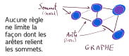
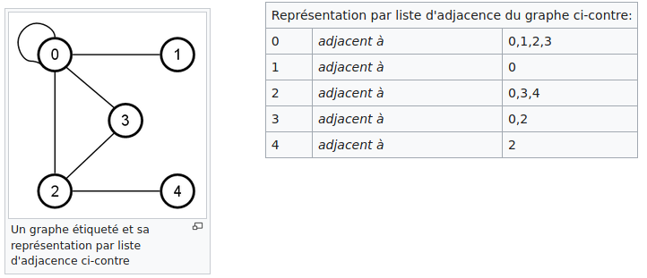

Ce chapitre ne pourra pas faire l’objet d’une évaluation lors de l’épreuve terminale écrite et pratique de l’enseignement de spécialité. BO MENE2121274N
Programme Officiel
| Contenus | Capacités attendues | Commentaires |
|---|---|---|
Graphes : structures relationnelles. Sommets, arcs, arêtes, graphes orientés ou non orientés. |
Modéliser des situations sous forme de graphes. Écrire les implémentations correspondantes d’un graphe : matrice d’adjacence, liste de successeurs/de prédécesseurs. Passer d’une représentation à une autre. |
On s’appuie sur des exemples comme le réseau routier, le réseau électrique, Internet, les réseaux sociaux. Le choix de la représentation dépend du traitement qu’on veut mettre en place : on fait le lien avec la rubrique « algorithmique ». |
Dans ce chapitre, nous étudions les graphes, une structure de données très utilisée pour représenter les liens et les interactions entre des objets, les personnes, les villes, les ordinateurs… En effet, nous verrons qu’il existe de nombreuses variétés de graphes permettant ainsi de décrire des situations diverses, tout en conservant, une même représentation et donc des mêmes méthodes pour les manipuler par informatique.
Les graphes : une structure de données non linéaire
Vous êtes déjà habitués à manipuler des listes, n-uplets ou encore les piles et les files, qui sont des exemples de structures de données linéaires, c’est-à-dire à une dimension, on peut les parcourir du début à la fin en suivant un seul chemin.
Dans le chapitre précédent, nous avons vu les arbres, un exemple structure de données non linéaire très utilisée pour représenter une hiérarchie entre des données comme des liens de descendance dans un arbre généalogique.
En fait, les arbres sont des graphes avec bien particuliers tels que tous les sommets sauf la racine ont un unique parent(on parle de graphe acyclique orienté).
Maintenant que nous parlons de graphe, il n’existe plus aucune restriction, il n’y a plus de racine, plus de restriction sur les parents, les enfants, ou quoi que ce soit.

- graphe
-
Un graphe est une structure de données composée d’objets: les sommets dans laquelle certaines paires d’objets sont reliées par des arêtes (ou arcs dans le cas de graphes orientés).
Lexique de la théorie des graphes

- Graphe orienté
-
On distingue les graphes non orientés, où les arêtes relient deux sommets de manière symétrique et les graphes orientés, où les arêtes, alors appelés arcs, relient deux sommets de manière asymétrique.
Lexique de la théorie des graphes

Graphes orientés et non orientés - Graphe pondéré
-
Un graphe pondéré ou un réseau est un graphe où chaque arête porte un nombre (son poids).
Ces poids peuvent représenter par exemple des coûts, des longueurs ou des capacités, en fonction du problème traité. Ces graphes sont fréquents dans divers contextes, comme le problème de plus court chemin ou le problème du voyageur de commerce.
Vocabulaire des graphes
- Sommets adjacents
-
Deux sommets reliés par une arête sont dits adjacents.
- Graphe complet
-
Un graphe est dit complet lorsque tous ses sommets sont adjacents.
- Ordre d’un graphe
-
L’ordre d’un graphe est le nombre de sommets de ce graphe.
- Degré d’un sommet
-
Le degré d’un sommet est le nombre d’arêtes dont ce sommet est une extrémité.
Lexique de la théorie des graphes
Quelques exemples de graphes
En fait les graphes sont omniprésents, car il est rare que l’information puisse être réduite à une structure linéaire comme les listes ou encore à un arbre dans lequel la descendance est parfaitement établie.
Internet
Prenons l’exemple d’internet, le réseau internet est un ensemble de machines sont identifiées par leur adresse IP. Elles sont reliées entre elles sans une machine mère qui centralise les échanges et dans lequel le chemin des paquets n’est pas unique entre deux machines grâce aux protocoles de routage.
Lorsque nous cliquons entre des sites Web et que nous naviguons entre les URL, nous naviguons vraiment à travers un graphe. Parfois, ces graphiques ont des sommets avec des bords non orientés - je peux aller et venir d’une page Web à une autre - et d’autres qui sont dirigés - je ne peux que passer de la page Web A à la page Web B, et jamais l’inverse.
Mais il y a un meilleur exemple qui illustre magnifiquement nos interactions quotidiennes avec les graphes: les réseaux sociaux.
Réseaux sociaux
Prenons l’exemple des réseaux sociaux tels sur Facebook ou son alternative libre Diaspora.
Dans ce type de réseau social:
- les sommets sont les utilisateurs
- les arêtes sont les liens d’amitié entre ces utilisateurs.
A gentle introduction to graph theory
L’amitié se veut être un lien bidirectionnel, on ne peut être ami de quelqu’un qui n’est pas votre ami: C’est un graphe non-orienté.
Au contraire dans les réseaux de microblogging comme Twiter ou son alternative libre Mastodon, les liens ne sont pas de la même nature.
On peut suivre une personne, mais il n’est pas obligatoire que cette personne vous suivre en retour.
 A gentle introduction to graph theory
A gentle introduction to graph theory
Le suivi est un lien directionnel : C’est un graphe non-orienté.
Graphes routiers
Les graphes routiers sont un bel exemple de graphes pondérés non-orientés. On peut utiliser le temps ou la distance pour la pondération.
On place souvent les sommets à leur position réelle sur une carte sur ce type de graphes.
Comment implémenter un graphe?
Il existe deux façons d’implémenter un graphe:
- La matrice d’adjacence,
- la liste de successeurs/prédécesseurs.
Nous allons voir comment réaliser ces deux implémentations, et comment passer de l’une à l’autre.
La liste de successeurs/prédécesseurs
- Liste d’adjacence
-
La liste d’adjacence d’un graphe non orienté, est la liste des voisins de chaque sommet.
Article Wikipédia sur la liste d’adjacence

La matrice d’adjacence
- Matrice d’adjacence
-
On représente les liens entre les sommets du graphe par une matrice de dimension dont l’élément non diagonal est le nombre d’arêtes (ou son poids pour un graphe pondéré) liant le sommet au sommet .
L’élément diagonal est le nombre de boucles au sommet i.
Dans le cas d’un graphe non orienté, la matrice d’adjacence est symétrique.

Pour un graphe orienté, elle est quelconque.
Article Wikipédia sur les matrices d’adjacence
Quelle implémentation choisir?
Cette représentation est particulièrement adaptée aux graphes creux (c’est-à-dire peu denses), contrairement à la matrice d’adjacence adaptée aux graphes denses.
| Implémentation | Accès à une arête | Accès à un voisin | Utilisation préférée |
|---|---|---|---|
| matrice d’adjacence | Graphe dense | ||
| liste de successeurs | Graphe creux |
Implémentations en Python
Le créateur de Python Guido Von Rossum, proposa une implémentation de graphe en Python utilisant la liste d’adjacence(https://www.python.org/doc/essays/graphs/):
Few programming languages provide direct support for graphs as a data type, and Python is no exception. However, graphs are easily built out of lists and dictionaries. For instance, here’s a simple graph (I can’t use drawings in these columns, so I write down the graph’s arcs):
A -> B
A -> C
B -> C
B -> D
C -> D
D -> C
E -> F
F -> C
graph = {'A': ['B', 'C'],
'B': ['C', 'D'],
'C': ['D'],
'D': ['C'],
'E': ['F'],
'F': ['C']}
En ce qui concerne les matrices, on les représente généralement sous forme de tableaux de tableaux, comme vu en première.
M = [[1, 2, 3],
[4, 5, 6],
[7, 8, 9]]
- Dessiner une représentation conventionnelle du graphe proposé par Guido Von Rossum.
- Écrire la matrice d’adjacence correspondante.
- Proposer une implémentation de la matrice d’adjacence de ce graphe en Python en utilisant une liste de liste.